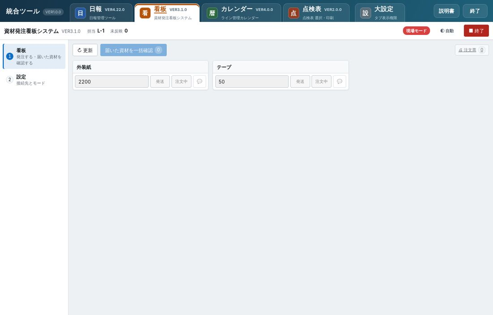
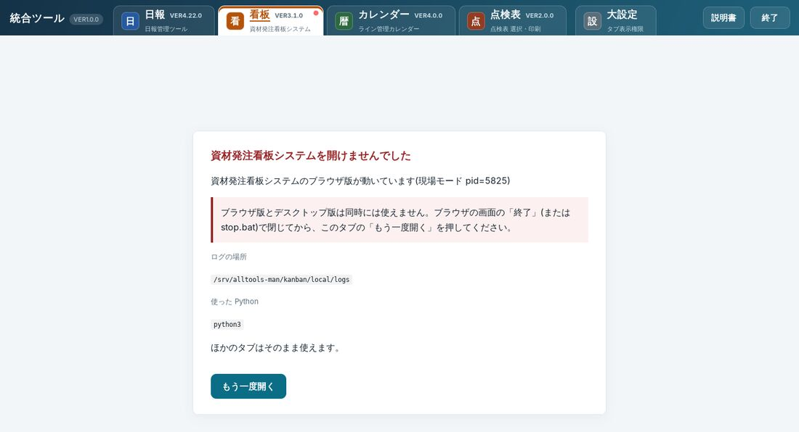
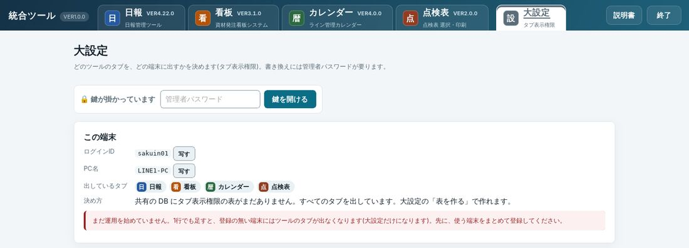
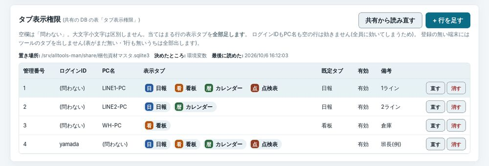
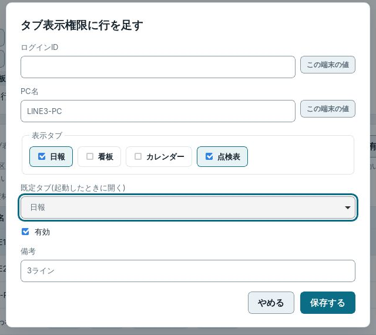
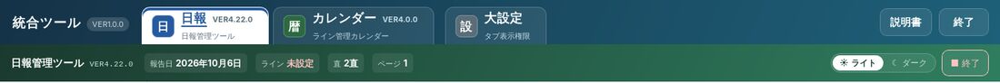
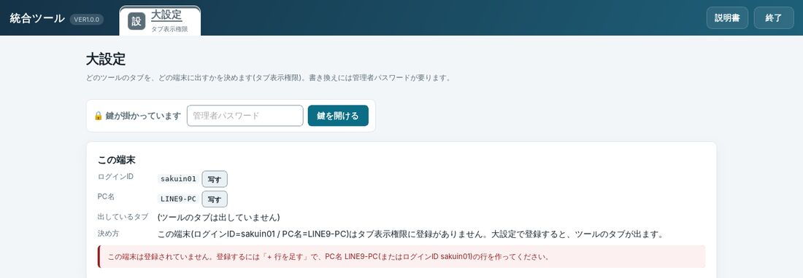

統合ツール・大設定
VER1.0.0日報・看板・カレンダー・点検表を、1つの窓に大きなタブで並べたものです。この説明書では、窓の使い方と、どの端末にどのタブを出すかを決める「大設定」を説明します。各ツールの使い方は、それぞれの説明書を見てください。
開き方
デスクトップの 統合ツール.exe(またはそのショートカット)をダブルクリックします。
窓が開き、上に大きなタブが並びます。この端末で使うタブだけが出ます(どのタブを出すかは大設定で決めます)。
最初のタブの画面が出たあと、ほかのタブも順に準備されます。タブの右上の黄色い点は「準備中」です。
画面の見かた
- 統合ツールの名前と版(VER1.0.0)。
- 大きなタブ。押すとそのツールの画面に替わります。いま開いているタブは白くなります。
- ツールの版(例: 日報は VER4.22.0)。問い合わせのときは、この版を伝えてください。
- 大設定。この端末のこと・どのタブを出すかを見る/決める画面です。
- 説明書。いま開いているタブの説明書(この画面)が出ます。
- 終了。統合ツールを終わります(全部のタブがまとめて閉じます)。

1 2 3- 統合ツールの帯(上の説明)。
- ツールの帯。ここから下は、そのツールの画面です。ツールの名前・版・ツールの「終了」などがあります。
- ツールの画面。使い方は、そのツールの説明書を見てください。
タブの使い方
| したいこと | 操作 |
|---|---|
| ほかのツールに替える | 大きなタブを押す。または Alt+1〜9(左から数えた番号) |
| いまのツールの画面を読み直す | F5。いま開いているタブだけが読み直されます(ほかのタブの打ちかけは消えません) |
| 説明書を見る | 説明書 か F1 |
タブを替えても、前のタブの画面はそのまま残っています。打ちかけの日報なども消えません。
| タブの右上の点 | 意味 |
|---|---|
| 点なし | 動いています(ふつう) |
| 黄色(点滅) | 準備中です。少し待ってください |
| 赤 | そのツールが止まっています。タブを開くと理由が出ます(タブが止まったとき) |
| 灰色 | そのツールは終了しています |
説明書の開き方
右上の 説明書 を押します(F1 でも開きます)。いま開いているタブの説明書が、画面の上に重なって出ます。
上の帯の 説明書の一覧 や、説明書の中の上の並び(日報・看板…)で、ほかの説明書も読めます。
閉じる(Esc) か Esc で閉じると、元の画面に戻ります(ツールの画面はそのままです)。
終わるとき
右上の 終了 を押します。窓の右上の × や、ツールの画面の「終了」でも同じです(どれを押しても、統合ツール全体が閉じます)。
どのツールも途中の処理が無ければ、そのまま閉じます。
共有への書き戻し・印刷などの途中の処理があるツールがあると、「次のツールで処理が残っています」と1つの確認にまとめて出ます。待てるときは やめる を押し、少し待ってからもう一度終了します。終了する を押すと中断して閉じます(送れなかった操作は手元に残り、次に開いたときに送ります)。
タブが止まったとき
あるツールが動かなくなると、そのタブだけに理由が出ます。ほかのタブはそのまま使えます。

1 2 3- 止まったタブには赤い点が付きます。
- 理由と、どうすればよいか。書いてあるとおりにしてください。
- 直したら もう一度開く を押します。そのツールだけが起こし直されます。
大設定: この端末
大きなタブの 大設定 を開くと、この端末のログインID・PC名と、いま出しているタブ、そう決まった理由が出ます。見るだけなら、パスワードは要りません。

1 2 3 4- 鍵。書き換えるときだけ、管理者パスワードを入れて 鍵を開ける。30分さわらなければ、また鍵が掛かります。
- この端末の ログインID・PC名。写す で写せます(登録のとき、係の人に伝える)。
- この端末に出しているタブ。
- 決め方(なぜこのタブになったか)。
大設定: タブ表示権限(どの端末にどのタブを出すか)
どのタブを出すかは、共有フォルダの DB(梱包資材マスタ.sqlite3。python-web-tools と同じもの)にある表 「タブ表示権限」 で決めます。1行に「どのログインID・どのPC名に・どのタブを出すか」を書きます。

1 2 3 4- 共有から読み直す: ほかの端末で直した内容を、すぐ読み込みます(ふだんは自動で読み直します)。
- + 行を足す: 端末を登録します(鍵を開けてから)。
- 表の置き場所。
- 行ごとの 直す・消す。
決まり
- 空欄は「問わない」。PC名だけ書けば、その PC ならだれがログインしても同じタブになります。
- ログインIDとPC名の両方を書いた行は、両方が合うときだけ効きます。
- 当てはまる行が2つ以上あれば、表示タブを全部足します。
- ログインIDもPC名も空の行は効きません(全員に効いてしまうため)。
- 有効を外した行は効きません(消さずに止めておけます)。
- 表示タブは「日報」「看板」「カレンダー」「点検表」。すべて と書くと全部です。
- 既定タブは、統合ツールを開いたときに最初に出すタブです。
端末を登録する
大設定で、管理者パスワードを入れて 鍵を開ける。
表がまだ無いときは「共有の DB にこの表がまだありません」の横の 表を作る を押します(最初の1回だけ)。
+ 行を足す を押し、下の画面で入れて 保存する。

1 2 3 4 5行を足す画面 - PC名(またはログインID)。この端末の値 で、いま使っている端末の値が入ります。
- 出すタブにチェック。
- 最初に開くタブ(無くてもよい)。
- 有効(ふつうはチェックのまま)。
- 保存する。共有の DB にすぐ書かれます。
登録した端末では、次に統合ツールを開いたときから、そのタブだけが出ます。増えたタブは開いたままでも1分ほどで足されます。

例: LINE2-PC(日報・カレンダーを登録)では、この2つと大設定だけが出る

大設定: 置き場所・配布設定・パスワード
| 欄 | すること | だれが |
|---|---|---|
| 共有の DB の置き場所 | タブ表示権限の表がある DB のフォルダとファイル名。ふつうは変えません(既定: python-web-tools と同じ 梱包資材マスタ.sqlite3)。既定に戻す で戻せます | 管理者(鍵を開けて) |
| ツール | 各ツールの版・動いているか・手元のデータの場所。止まったツールは もう一度開く | だれでも(見るだけ) |
| 管理者パスワード | いまのパスワードと新しいパスワード(4文字以上)を入れて 変える | 管理者 |
| 配布設定 | この端末の置き場所・管理者パスワードを書き出して、ほかの端末に配る。配った先は、その端末に無い設定だけ読み込みます | 管理者 |
| このアプリ | 版・一式の場所・ログの場所 | だれでも(見るだけ) |
困ったとき
| こうなった | こうする |
|---|---|
| 大設定のタブしか出ない | この端末がタブ表示権限に登録されていません。大設定の「この端末」のログインID・PC名を係の人に伝えて、登録してもらいます |
| 使いたいタブが出ていない | 登録した行の表示タブに入っていません。係の人に直してもらい、統合ツールを開き直します |
| 「ブラウザ版が動いています」と出て開かない | Start.vbs で開いたブラウザの画面が残っています。ブラウザの画面の「終了」で閉じてから、統合ツール.exe を開き直します |
| タブに赤い点・「開けませんでした」 | 画面の理由のとおりにして、もう一度開く(タブが止まったとき) |
| 画面が固まったように見える | そのタブで F5。ほかのタブは消えません |
| パスワードを忘れた | 係の人に頼みます(パスワードを既定に戻せます) |
| 共有の DB に届きません、と出る | 共有フォルダにつながっているか確かめます。つながっていない間は、前に読めた内容でタブを出しています |
統合ツール VER1.0.0 の説明書です。統合ツールの右上の「説明書」(F1)から、いつでも開けます。画面の写真は例のデータで撮ったものです。